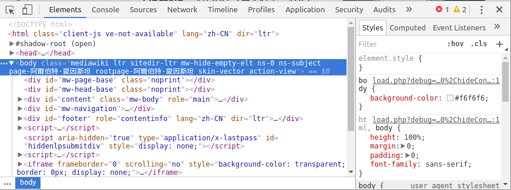
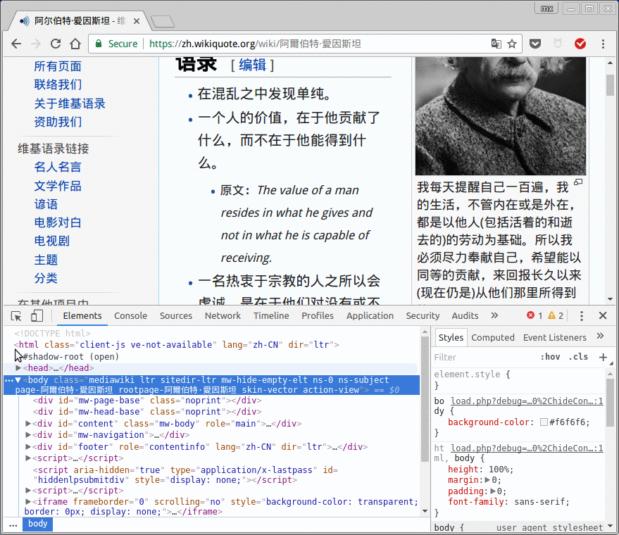
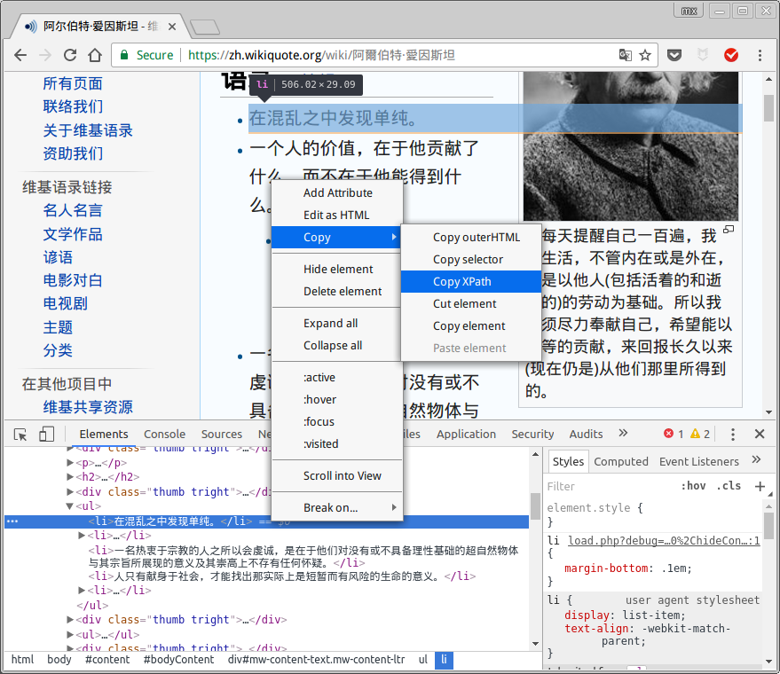
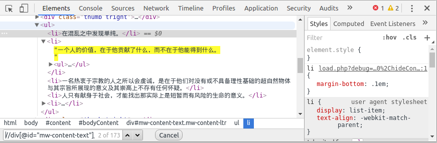
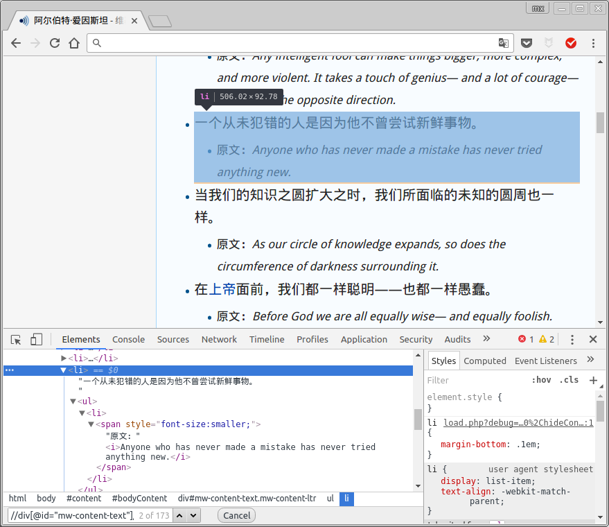
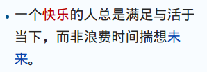
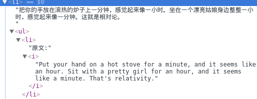
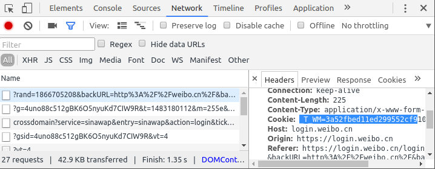
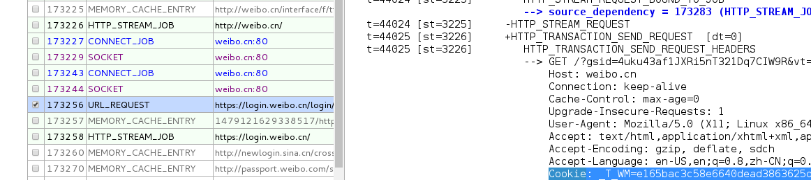

前一段时间写了不少Python的爬虫程序, 为此还看了极客学院上的一些教程, 现在来简单总结一下. 主要介绍用requests + lxml的方式, scrapy的话之前写过一篇介绍性的文章, 这里就不重复了. 而且感觉一般简单的爬虫项目, 一个Python文件就基本可以搞定, 没必要用scrapy建立一个工程文件夹搞那么正式...
安装需要的库(python2):
pip install requests, lxml
然后在Python程序最开始导入:
import requests
from lxml import etree
requests基础用法
抓取html内容
用requests获取目标网址的html代码非常简单, 只需要用requests.get方法, 传入网址URL即可.
举个例子, 想要抓取维基语录的HTML内容, 代码很简单:
url = 'https://zh.wikiquote.org/zh-cn/阿爾伯特·愛因斯坦'
r = requests.get(url)
html = r.text
requests.get()返回一个response对象r, 可以用r.ok或者r.status_code检查对象是否正常返回(status code=200).
编码问题
处理非英文网页时经常遇到的问题就是编码的问题了(不知道py3是不是对Unicode支持好一点?), 前面得到的html其实并非字符串而是Unicode对象:
>>> type(html)
<type 'unicode'>
Unicode对象处理的时候一不小心就会得到以下的错误:
UnicodeEncodeError: 'ascii' codec can't encode characters in position 101-113: ordinal not in range(128)
所以在那些需要string类型的地方, 需要用encode函数转换:
>>> type(html.encode('utf-8'))
<type 'str'>
另外实际中还遇到过比较奇葩的情况, 是返回的response的编码并不对(这个编码是requests根据网页内容自己推断的, 所以有时会出错), 比如这个网址, requests以为它的encoding是'ISO-8859-1', 所以为了保险起见, 最好手动指定r.encoding:
r.encoding = 'utf-8'
另: 还有一种经常用的解决utf编码的方式, 就是在文件开头加上这四句话:
# coding: utf-8
import sys
reload(sys)
sys.setdefaultencoding('utf-8')
不过, 看到有人说这种方式并不好, 所以最好别用这么暴力的方式吧...
用scrapy shell检查得到的html文件内容
需要注意的一点是, requests.get得到的html内容并不一定和在浏览器打开链接得到的内容相同!
为了检查是否得到了想要的html内容, 有两个方式, 一个是把得到的内容输出为一个.html文件, 然后用浏览器打开, 比如这样:
>>> with open('tmp.html', 'w') as f:
... f.write(html.encode('utf8')) # 注意要显式指定编码
这样做其实并不方便, 输出到本地文件以后还要用文件浏览器找到那个文件再打开, 而且打开的网页并没有图片, 也没有css样式.
我比较喜欢用scrapy shell这个工具, 这个工具在之前的文章也提到过, 它非常适合快速测试一些东西.
首先安装一下scrapy吧还是: pip install scrapy
然后输入scrapy shell即可使用. 用fetch(url)可以把返回的结果存放在(scrapy shell默认的)response变量中, 可以把fetch操作理解为response = requests.get(url). 然后查看得到的html文件 只需要 view(response), 就会自动用浏览器打开下载的临时文件, 非常方便.
$ scrapy shell --nolog
[s] Available Scrapy objects:
[s] scrapy scrapy module (contains scrapy.Request, scrapy.Selector, etc)
[s] crawler <scrapy.crawler.Crawler object at 0x7f8aa3b70e50>
[s] item {}
[s] settings <scrapy.settings.Settings object at 0x7f8aa3b70cd0>
[s] Useful shortcuts:
[s] shelp() Shell help (print this help)
[s] fetch(req_or_url) Fetch request (or URL) and update local objects
[s] view(response) View response in a browser
In [1]: url = 'https://zh.wikiquote.org/zh-cn/阿爾伯特·愛因斯坦'
In [2]: fetch(url)
In [3]: view(response)
Out[3]: True
修改header, 伪装浏览器
对于有些网站, 直接用requests.get抓取会得到403forbidden错误, 这时就要修改一下get函数的headers参数了, 把一个Python字典传给headers参数, 这个字典理, 'user-agent'对应chrome/firefox使用的内容. 例子:
hea = {'User-Agent':'Mozilla/5.0 (Windows NT 6.3; Win64; x64) AppleWebKit/537.36 (KHTML, like Gecko) Chrome/41.0.2272.118 Safari/537.36'}
r = requests.get('http://jp.tingroom.com/yuedu/yd300p/', headers = hea)
headers参数对于那些不太好爬的网站非常有用, 不过关于如何知道往header里放什么东西, 需要用chrome-dev-tools, 这个后面再说.
lxml以及xpath语法
还是继续上面维基语录的例子, 假设现在已经获取了网页的html文件, 下一步就是在html文件里提取想要的内容了. 比如我们想要从维基语录上抓取爱因斯坦的所有名言.
从html中提取感兴趣的内容, 一种选择是用正则表达式, 不过正则表达式写起来太蛋疼了 — (?<=blablah).*(?=blah)之类的, 每次用都得从新查. 而且处理html代码时经常容易出错.
html语言可以看做是一种xml语言, 而xml语言其实是分层次的(可以parse为一个xml树), 操作xml元素的神器就是xpath语言了.
xpath基础语法
xpath的语法其实不难, 入门的话话二十分钟看看这里估计就差不多. 这里简单列一下:
选取节点的语法有:
/从根节点选取,//从所有匹配的节点选取.当前节点,..当前的父节点nodename选取节点,@选取节点的属性- 通配符:
*, 选取若干路径则用|分隔 text(): 获取该节点的文本内容
例子:
//img/@src: 选取所有img节点的src属性//img/../text: 选取img节点的父节点下的text节点(所以text和img为"sibling"关系)//*/@src: 选取任何节点的src属性
然后过滤节点的谓词语法有: (谓词放在方括号中)
[1]选取第一个元素,[last()]选取最后一个,[position<3]选取前两个[@lang="eng"]选取属性lang等于"eng"的元素
遇到更复杂的xpath不会写的话 尝试翻译成英文然后Google一下, 几乎总会找到答案.
使用chrome-dev-tool获得元素的xpath
可以直接用chrome的开发者工具获取网页元素的xpath, 在该网页上按下crtl-shift-I就可以打开devtool了:

点击左上角那个指针的小图标, 然后再在网页上点击想要查找的元素, 就可以快速定位到它在html里对应的代码了:

在代码中点击右键, 可以得到xpath:

不过一般chrome找到的xpath并不具有通用性, 所以最好还是自己分析得到合适的xpath代码.
chrome给找到的xpath是//*[@id="mw-content-text"]/ul[1]/li[1], 经过分析和测试, //div[@id="mw-content-text"]/ul[position()<last()]/li/text()应该是比较正确的所有名言的xpath代码. 为了测试xpath, 可以直接在chrome-dev-tool里面按下ctrl-F查找xpath:

用lxml.etree操作xpath
学会了xpath, 接下来要在Python里使用xpath则需要lxml.
步骤是: 首先用网页html内容建立一个etree对象, 然后在使用它的xpath方法, 传入之前得到的xpath语句. 返回的结果为一个list, list里面就是所有匹配的元素了.
url = 'https://zh.wikiquote.org/zh-cn/阿爾伯特·愛因斯坦'
r = requests.get(url)
sel = etree.HTML(r.text)
for quote in sel.xpath('//div[@id="mw-content-text"]/ul[position()<last()]/li/text()'):
print quote.strip()
xpath使用技巧
这里说一下xpath的实际使用技巧. 正好前面的代码也不完善, 结合这个例子来说.
- 先抓大再抓小
其实之前的xpath还有不完美的地方, 比如爱因斯坦的页面中有不少名言还有"原文"这一信息:

在一个li节点下面有可能还有东西, 所以我们可以先获得这一个个li元素, 然后再在每个li元素里面尝试查找"原文"的信息. 代码如下:
for li in sel.xpath('//div[@id="mw-content-text"]/ul[position()<last()]/li'):
quote = li.xpath('./text()')[0]
print quote.strip()
origin = li.xpath('./ul/li/span/i/text()')
if len(origin)>0: print 'origin:', origin[0]
更复杂的例子比如豆瓣电影的页面, 每一个电影的entry都有电影名/上映时间/国家等好多信息. 处理这样的页面, 必须要先把大的元素(整个电影信息的div)抓取, 然后再在每个大元素里分别提取信息.
- 用
string()获得nested节点文字内容
上面的代码运行结果还有不满意的地方: 对于一些带有超链接的名言, 我们的程序不能获取那些带有超链接的文字, 比如这句话:

它的html代码是这样的:
<li>
一个
<a href="/w/index.php?title=%E5%BF%AB%E4%B9%90&action=edit&redlink=1" class="new" title="快乐（页面不存在）">快乐</a>
的人总是满足与活于当下，而非浪费时间揣想<a href="/wiki/%E6%9C%AA%E6%9D%A5" title="未来">未来</a>
。
</li>
如果直接用/text()处理的话, 只能得到"一个"这俩字... 问题出在这个元素是nested的, 里面嵌套了别的元素(两个<a>), 而这种情况还非常常见, 所以怎么办呢? 需要用xpath的string()函数, 它可以返回节点的正确字符串表示. 所以代码再次修改, quote的获取改为: quote = li.xpath('string(.)').
xpath里提供了蛮丰富的函数, 遇到比较复杂的操作的时候可以参考一下.
- 删除不想要的节点
进行了上面的修改, 又引入了新的问题: 对于那些有"原文"信息的li元素而言, 用string()函数的话会把这些原文信息也包括在内了, 这不是我们想要的结果. 比如这样的节点:

这时, 可以用lxml提供的remove函数, 在li节点中把不需要的节点先去掉, 然后再使用string()就不会有不需要的内容了.
最终的代码为:
for li in sel.xpath('//div[@id="mw-content-text"]/ul[position()<last()]/li'):
print '---'
origin = li.xpath('./ul')
badnodes = li.xpath('./ul') # remove 'origin' stuff in the li element
for bad in badnodes:
bad.getparent().remove(bad)
quote = li.xpath('string(.)')
print quote.strip()
if len(origin)>0:
print origin[0].xpath('string(.)').strip()
动态页面/模拟登录: 善用chrome-dev-tools
上面的维基语录的例子还算比较简单, 对于那些需要动态加载的网页或者需要登录才可以查看的内容, 就需要多用chrome开发者工具了. 由于这方面要根据不同网站去试验(+猜测), 所以这里介绍的不会太详细...
一般来说, 对于动态加载的网页, 可以打开ctrl-shift-I打开devtools以后, 选择network标签页然后刷新, 在最开始的地方一般会有form提交(可以用requests.post模拟)或者url请求之类的东西, 一路追踪过去即可.
这里展示一下用cookies模拟登录微博的过程. weibo电脑版的页面太过凌乱, 用微博手机版(weibo.cn).
用dev-tools获取登录cookies
cookies就是一小段(加密后的)字符串, 它的大概是本地存储的保留用户信息的加密字符, 有的网站点选"下次自动登录"时, 其实就是生成了一个cookie保存在本地, 下次登录时只要向网站发送这串cookies字符, 如果cookies没有过期的话就可以直接登录了.
在要点击登录前, 打开devtools并选择network标签. 然后在登录以后, 找开头的几个requests, 定位到一个header带有cookie的request上面, cookie就在这里了(我试验发现, 好像需要登录以后再刷新一下, 这时dev-tools得到的cookies才是可用的):

另一种办法是用chrome自带的监测页面

在requests里使用cookies
一旦获得了cookies字符串, 模拟登录就很简单: 在requests.get里传入headers参数:
import requests
hea = {'Cookie':'_T_WM=3a52fbed11ed299552cf910553be7d3b; SUB=_2A251Y_geDeTxGedG6lUQ9SrKyj2IHXVWr5hWrDV6PUJbkdAKLUejkW1CLxUVXEMZZq8EFgsGuIYNqC6MqQ..; gsid_CTandWM=4uno88c512gBK6O5nyuKd7CIW9R'}
url = 'http://weibo.cn'
html = requests.get(url, headers = cook).content # use content instead of text
print html
保存爬取的内容
保存文本内容: csv
保存文本信息我一般喜欢放进csv里面, 而用pandas操作csv文件会比较方便: 在程序中, 把每一个抓取的条目(item)放进一个字典, 然后append到dataframe里面, 最后直接to_csv搞定.
下面是个简单的示意代码, 假设我们要抓取一些文章的title, date和发表地点三个信息:
import pandas as pd
df = pd.DataFrame()
# ...
for item in __loop__:
#...
title, place, date = __code_for_extracting_these_fields__
#...
series = pd.Series({'title':title, 'place':place, 'date':date})
df = df.append(series, ignore_index=True)
df = df[['title', 'date', 'place']] # adjust column order
df.to_csv('melanthon.csv', index=False, encoding='utf-8')
保存非文本内容
有些时候我们要下载图片/视频等非文本的信息, 我们可以用xpath定位到图片/视频的链接地址处, 那么下载到本地文件, 我查的有两个办法.
第一个方法简单粗暴: 用urlretrieve, 直接往函数里传入url和本地路径即可:
from urllib import urlretrieve
urlretrieve(img_url, fpath)
另一个方法还是用requests, 用分片的方式获取文件(我猜这种更适合大文件的下载?):
resp = requests.get(url, stream=True)
f = open(fpath, 'wb')
for chunk in resp.iter_content(chunk_size=1024):
if chunk: # filter out keep-alive new chunks
f.write(chunk)
f.close()
并行下载
在下载大文件的时候可以非常明显感受到, 下载文件的过程占据了大部分程序的执行时间.
比较简单的加速办法就是, 先把所有要下载的文件url(以及本地保存的fpath)放进一个list里, 最后在一起下载, 这时就可以使用Python的多进程模块进行加速了.
核心的代码只其实就是pool.map, 把爬去的函数map到要爬的url列表上:
from multiprocessing.dummy import Pool
pool = Pool(4)
results = pool.map(crawl_func, urls_list)
pool.close()
pool.join()
下面是个实际的例子, 首先定义了一个download函数用于下载视频, 然后download_videos函数, 多线程下载视频.
def download((url, fpath), headers={}):
fname = os.path.split(fpath)[-1]
print 'start downloading %s ...' % fname
with open(fpath, 'wb') as f:
while 1:
resp = requests.get(url, stream=True, headers=headers); time.sleep(1.0)
if resp.ok: break
print resp.status_code
for chunk in resp.iter_content(chunk_size=1024):
if chunk: # filter out keep-alive new chunks
f.write(chunk)
print 'download finished: %s' % fpath
def download_videos(video_urls_list):# input = list of (url,fpath) pairs
print 'downloading %d files in parallel...' % len(video_urls_list)
from multiprocessing import Pool
pool = Pool(processes=4)
pool.map(download, video_urls_list)
pool.close()
pool.join()
print 'all downloading finished !'
最后, 我写了一个极客学院课程视频的下载脚本, 用cookies模拟登录. 一百来行的代码, 跑一晚上可以下载好几十G的视频...
gist放在: https://gist.github.com/X-Wei/46817a6614e3677391ab13e420b4cb9f (不过这里用的cookies早就过期了)
Disqus 留言